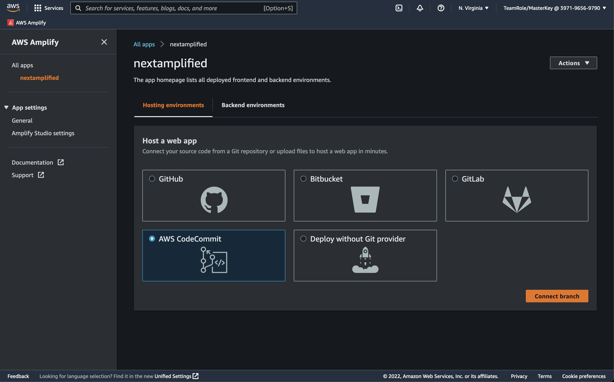
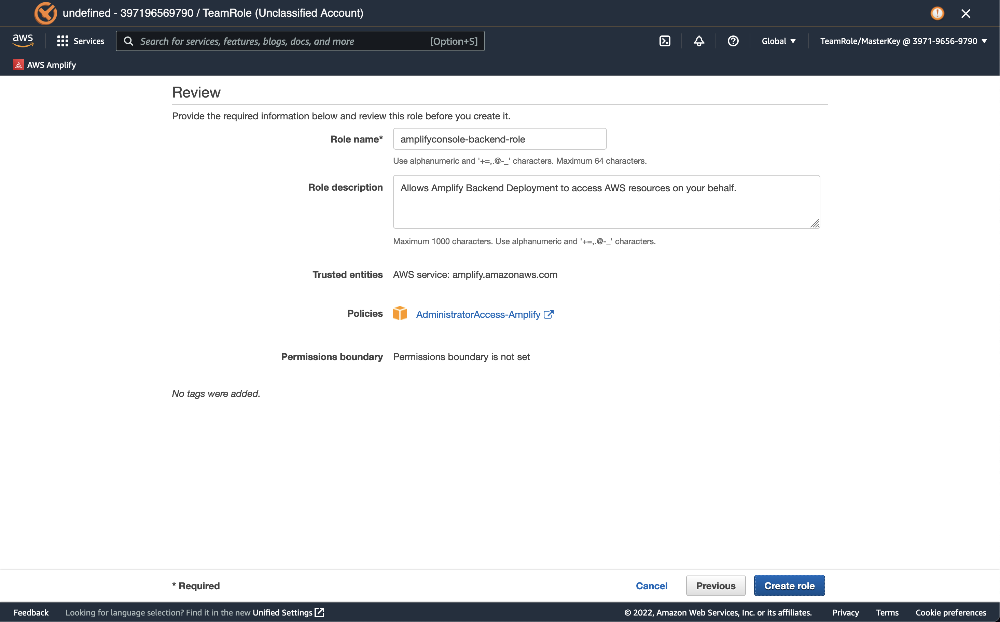
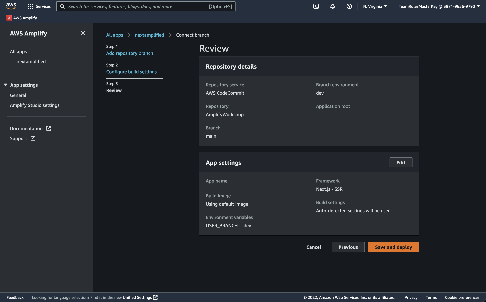

Deploy and Host App
You’ve successfully built an Amplify app with Next.js! Now that you’ve built something, it’s time to deploy it to the web with Amplify Console!
Add hosting to your app
You can deploy Next.js SSR apps with AWS Amplify’s CI/CD and hosting service. In this guide we’ll cover how to deploy and host your SSR web apps to quickly share with others.
We’re going to leverage Amplify’s Continuous Deployment feature, which requires us to commit our project to a Git repository. For this workshop, we’re going to use AWS CodeCommit, but you could also use other providers such as Github, Bitbucket, or Gitlab.
First, navigate to the CodeCommit page within the AWS Console and click the orange Create repository button. Give your repository a name such as nextamplified and then click the orange Create button. This will create a Git repository that we can then use to commit our Next.js application to.

Once your repository has been created, find the Clone URL dropdown at the top right corner of the repository page and select the Clone HTTPS option. This will copy the repository URL to your clipboard.
Next, return to your Cloud9 environment and, first making sure that you are in the Next.js project folder, in the terminal type git remote add origin [CodeCommit URL], replacing [CodeCommit URL] with the value your copied previously. This will add a new remote to your project’s Git config.
Once the remote has been added, we need to link it to the main branch in our CodeCommit repository and then push our code to the remote. We can do this in one step with the following command:
Now we’re ready to push all of our updates to our repository.
git add .
git commit -m "amplify workshop updates"
git push --set-upstream origin main
Enumerating objects: 19, done.
Counting objects: 100% (19/19), done.
Delta compression using up to 2 threads
Compressing objects: 100% (17/17), done.
Writing objects: 100% (19/19), 63.32 KiB | 6.33 MiB/s, done.
Total 19 (delta 0), reused 0 (delta 0), pack-reused 0
To https://git-codecommit.us-east-1.amazonaws.com/v1/repos/AmplifyWorkshop
* [new branch] main -> main
Branch 'main' set up to track remote branch 'main' from 'origin'.
Our local project is now connected to our CodeCommit repository and we’ve pushed our local changes to the remote repository. Now we can go ahead and create a CI/CD pipeline to build and deploy our application.
Set up CI/CD for your app
From the root of your project, run the following command and select the bolded options.
amplify add hosting
✔ Select the plugin module to execute · Hosting with Amplify Console (Managed hosting with custom domains, Continuous deployment)
? Choose a type Continuous deployment (Git-based deployments)
? Continuous deployment is configured in the Amplify Console. Please hit enter once you connect your repository
For now, we’re going to host our application using the Hosting with Amplify Console option with Continuous deployment. In order to use Continuous deployment, we will need to connect our newly created repository to our Amplify project. To do this, navigate to the Amplify page in the AWS Console, and click on the card for our nextamplified project. From there, click on the Hosting environments tab and select AWS CodeCommit and then click the orange Connect branch button.

On the next page, use the dropdown to select our repository and then in the Branch dropdown, select main and then click the orange Next button.
On the Configure build settings page, select dev from the Environment dropdown to link it with the proper Amplify environment, as Amplify supports creating any number of environments for development, testing, production, etc.
Amplify Hosting requires a service role with the proper permissions. Since we don’t have one, we can have Amplify create it for us by clicking the Create new role button, which will open a new browser window to the IAM service page wizard for creating a new service role. All configurations will already be pre-populated, so just continue to click the blue buttons at the bottom of the screen until you reach the Review page.

Confirm that all the settings look correct, then click the blue Create role button. Close that window to return to the Amplify page and click the refresh button next to the service role dropdown. Select the newly created amplifyconsole-backend-role role from the dropdown, then click the orange Next button at the bottom of the page.

Review your configuration and if satisfied, click the orange Save and deploy button. This will kick off a build and deploy of our application.